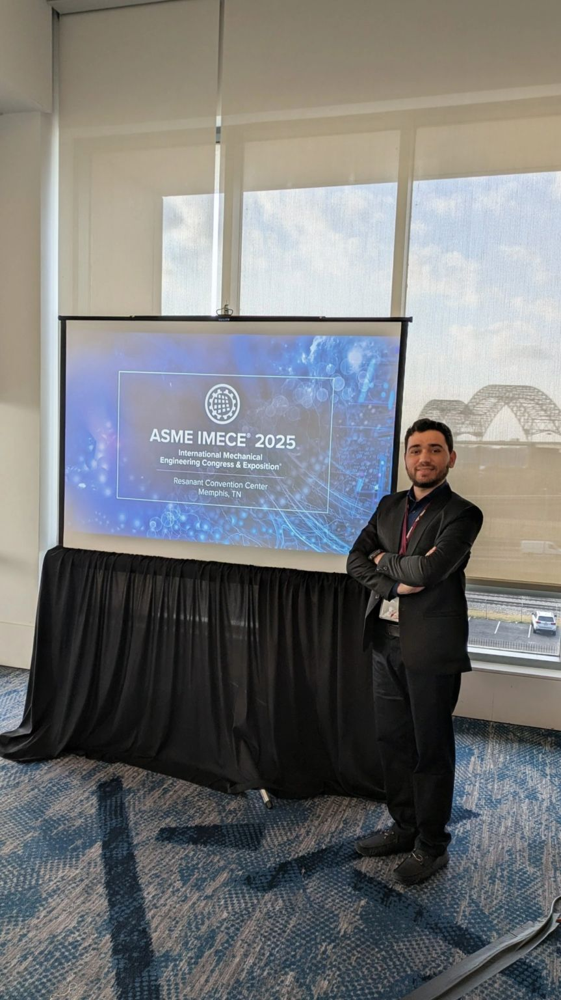
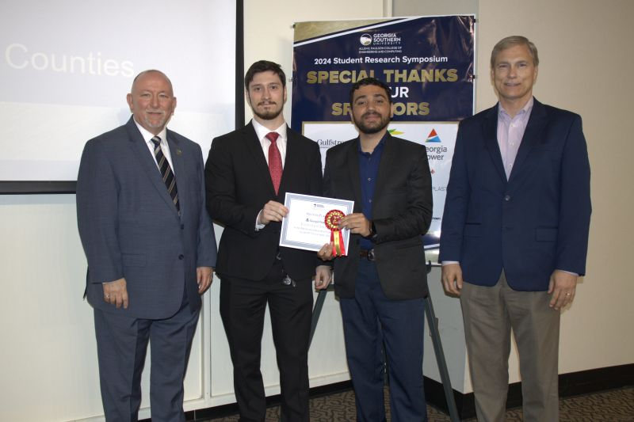
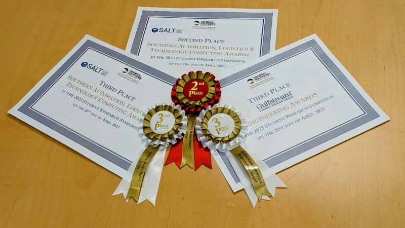

2024-2027 (Anticipated)
Texas A&M University
Dissertation track: geometry-aware graph-based neural operators for CFD and heat transfer.
PhD Researcher · Department of Mechanical Engineering · Texas A&M University
My work integrates finite-volume modeling, geometry-aware deep learning, and high-impact engineering applications. I develop physically grounded computational frameworks that are scalable and generalizable for modern energy and thermal-fluid systems.
I specialize in graph-based deep learning and high-fidelity CFD, with applications in fluid flow, heat transfer, and transport in reactive porous media for energy conversion and storage.

Muhammad Hasnain is a PhD researcher in Mechanical Engineering at Texas A&M University working at the intersection of scientific machine learning, computational fluid dynamics, and multiphysics transport modeling. His current doctoral work focuses on graph-based, geometry-aware surrogate frameworks for thermal-fluid systems and high-fidelity CFD acceleration.
He previously completed an MS in Mechanical Engineering at Georgia Southern University, where his thesis developed coupled heat and mass transfer models for metal-hydride hydrogen storage systems. Across his MS and PhD trajectory, he has built in-house finite-volume solvers, integrated OpenFOAM with machine-learning workflows, and developed graph/CNN surrogates with strong geometric and parametric generalization.
Academic training records with degree outcomes, GPA/CGPA, and direct certificate/transcript access.
2024-2027 (Anticipated)
Dissertation track: geometry-aware graph-based neural operators for CFD and heat transfer.
2022-2024
Thesis: coupled heat and mass transfer modeling in metal-hydride hydrogen storage systems.
Spring 2020
U.S. Department of State-sponsored academic exchange.
2017-2021
SpanTran evaluation: 130 U.S. credits equivalent.
Jan-Jun 2020
Leadership, Engagement, and Action for Pakistan (Global UGRAD-Pakistan).
My work integrates scientific machine learning, high-fidelity numerical methods, and applied thermal-fluid engineering to build robust, interpretable, and deployment-ready computational models.

Presented graph-neural-network-driven scientific ML for heat transfer and fluid flow; a major step in my PhD research trajectory.
Related LinkedIn PostSuccessfully defended thesis on coupled heat and mass transfer in metal-hydride hydrogen storage systems.
Defense PostRecognition for fire safety and hydrogen-storage modeling research at Georgia Southern research symposium.
Award PostDeveloped GNN architectures integrated with OpenFOAM workflows to improve extrapolation across geometry and parameter spaces.
Applied supervised and semi-supervised graph models for spatiotemporal transport prediction and robust autoregressive rollout.
Contributed CNN surrogate components in a two-phase framework for computationally efficient high-speed flow simulation.
Built finite-volume models for coupled thermal-mass transport to support safer, higher-performance reactor operation.
Developed and validated a 3D dehydration and transport model for forensic fire investigation and NIJ-linked dissemination.
Filter by publication type and search by keywords. Journal and conference links, article links, and impact factors are included for each entry.
Published Peer-Reviewed Outputs
7
Conference Proceedings (Published)
10
Conference Papers (Under Review)
2
Journal Manuscripts (Under Review)
3
Citations
72
h-index
4
Research Interest Score
86.9
ResearchGate
Metrics updated from the ResearchGate profile (Citations: 72, h-index: 4, Research Interest Score: 86.9).
Curated milestones aligned with CV records, including conferences, awards, mentoring, internships, and major academic outcomes.
Proposal: Thermo-chemistry model and property database development for fire-exposed wall-lining materials.


Current affiliation: Department of Mechanical Engineering, Texas A&M University.